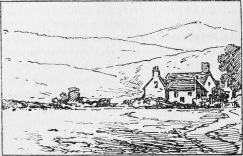
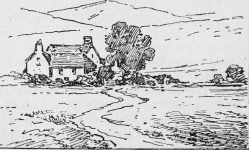
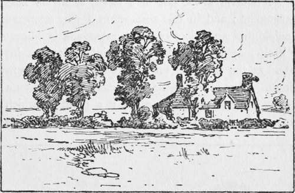
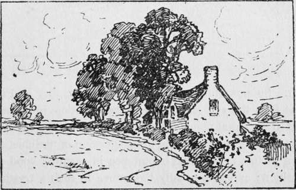
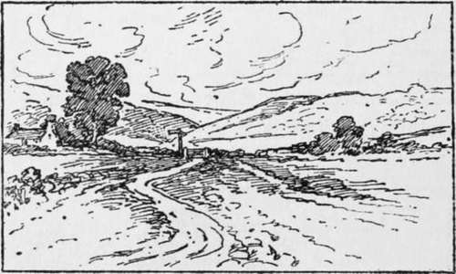
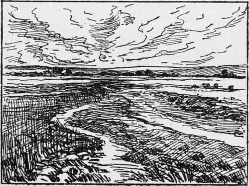
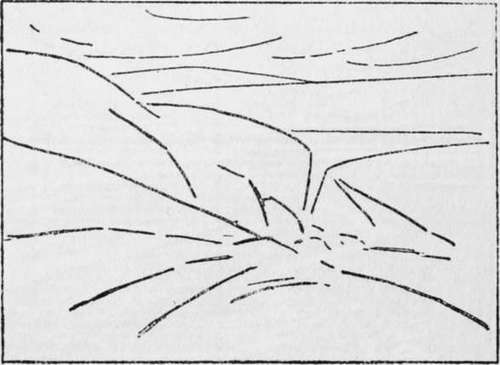
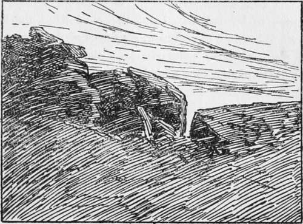
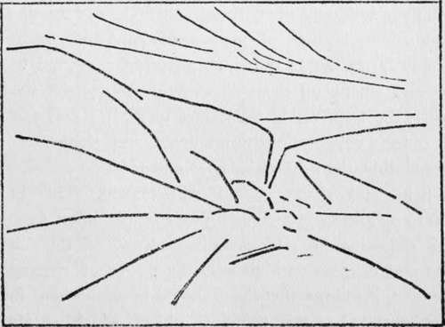

Pictorial Photography. Part 3
Description
This section is from the book "The Barnet Book Of Photography", by Herts Barnet. Also available from Amazon: The Barnet Book Of Photography.
Pictorial Photography. Part 3
Notice, however, that the middle of the picture lacks interest and there is no one principal point of attraction, the eye passing restlessly from the abbey to the house and back again, so that, should the picture by its beautiful lighting, its suggestion of atmosphere, the glory of the flowers, the whisperings of breezes, and the far-off mystery of the hills please us, our senses would not be so completely at rest to enjoy this appeal to our emotions. There is want of repose and centralisation of design.
In order to prevent this division of attention we include only the farm-house, in order to do which our lens compels us to include fa great expanse of uninteresting country as in Fig. 2, and the eye naturally asks, "Why this crowding down into one corner? " Compare the effect produced by Fig. 3, in which a considerable amount has been cut off in order that the chief object shall be more or less central, and shall have nothing included to detract from it. The gain in point of centralisation and predominance has been attained by sacrifice of area. But the same may be sometimes won by a different means. Thus in Fig. 4 we have an unpromising subject, in which several trees, all nearly equally important, give the eye no opportunity of centring on one central spot; but if we move away to the right and look at the trees so that one comes behind the other, and the lane, instead of cutting across, leads as it were into the subject, we may get a pleasing group, as in Fig. 5. Consider for a moment what would be the effect on the senses left. So powerful indeed are such lines, that in Fig. 7 one feels the eye, and therefore the attention, involuntarily led to a central point, although there is nothing to interest us there. Evidently, then, the disposition of the chief lines in a picture are of great importance in securing good composition ; and it is usually the course in such a treatise as this to dwell primarily and at considerable length on the composition of lines. I believe, however, that many a beginner in pictorial photography has experienced difficulty in reconciling the scenes he encounters with these diagrams, because, of course, there are no real lines present in Nature which these two different arrangements would respectively exert.
Fig. 2.
Fig. 3.
Fig. 4.
Fig. 5.
Fig. 6.
And now notice that in Fig. 5 the winding lane, like a graceful flourish at the end of a letter, seems to help the arrangement; and in this connection I may enunciate the principle that an object of comparatively little importance in itself may become the chief point of interest in proportion as the principal lines in the composition converge thereto. Thus in Fig. 6 the convergence of lines on a tiny gateway in middle distance make it a point on which the attention focuses, to the ignoring of the big tree on the but continuous series of masses; like the hummocks of turf, and tufts of grass which in Fig. 7 suggest lines, as outlines (such as hedgerows and hills) indicate one plane against another.
Take, for instance, the example of a moorland scene reproduced facing page 294 and entitled " Rain from the Hills" (though, here let me say, I am aware of its pictorial shortcomings, and merely choose it now as a convenient object-lesson). Notice that on looking at it the attention at once rests on the central mass of dark rock and the brightly lighted ground below it. This contrast of light and dark, as well as the happy arrangement of forms, secures concentration of interest, although the rocks to the left and the remote hills above and to the right do not admit of one's feeling any incompleteness. Next let us resolve the composition into its line composition, which is seen in Fig. 8. We have already spoken of convergence of lines, and whilst this is sufficiently observed in the present example, it is also equally noteworthy that the disposition of lines is of a mutually compensating character or arrangement of lines. The beginner follows a code of rules too closely, and in so doing defeats the end which those rules seek to achieve, which is merely to suggest in a general way certain principles, compliance with which, whilst far from securing pictorial success, may prevent the beginner from committing obvious blunders. To follow any prescribed plan of composition so closely as to betray the fact that the work has been so done, or arrange objects or so depict them that the lines of the composition are at once evident, is perhaps worse than to err on the side of unsatisfactory composition.
Fig. 7.
Fig. 8.
Suppose, for instance, a different point of view were to give an arrangement of lines as shown in Figs. 9 and 10, not at all an impossible supposition, seeing how shapes seem to change as the light shifts and changes. Surely in this case it must be apparent that the one-sidedness of the light and shade arrangement, and the lines all sloping one way, is not so satisfying to the eye as in the former example.
But the limits of the present article forbid my dwelling longer on these points, nor am I sure that I should wish to do so, lest seeming to insist too much on a definite scheme and shade, as well as the ideas embodied, clothe with beauty.
Fig. 9.
Fig. 10.
If the disposition of lines constitutes such a perfectly symmetrical design that it is at once recognised as being.
Continue to:
Tags
paper, print, negative, exposure, lens, development, camera, focus